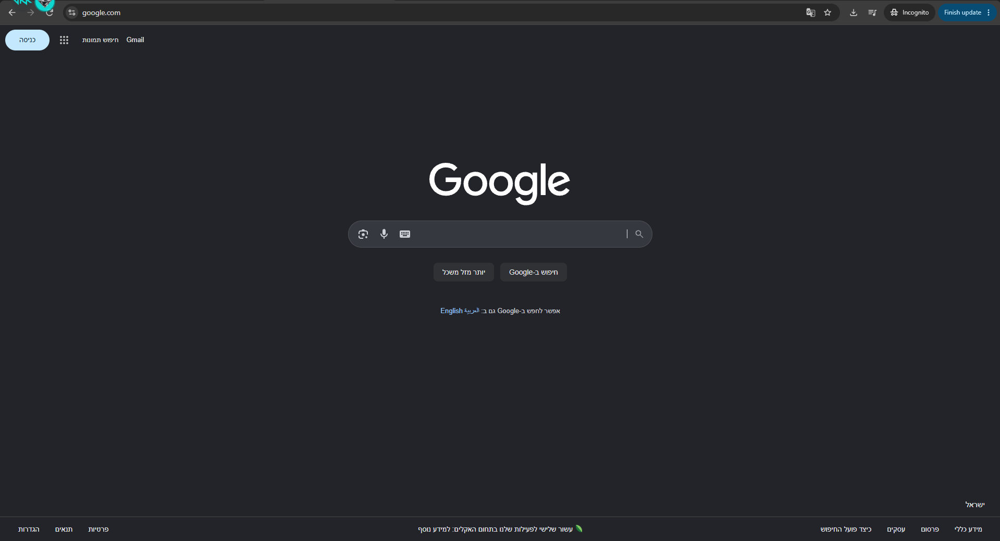
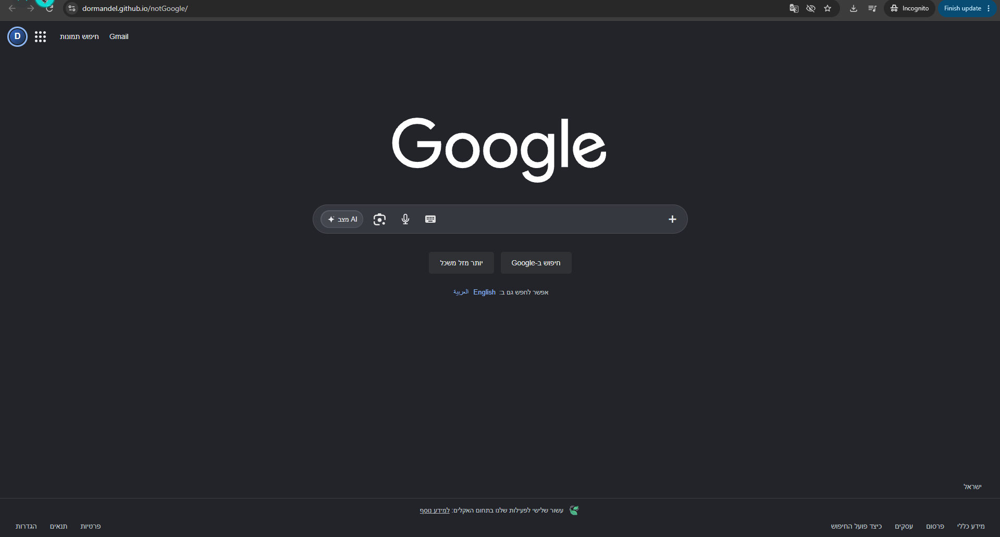

לוגו
שונה בגודל ובגובה ביחס למסך
שני הצילומים שהעלית, ברוחב מקורי זהה של 1919 פיקסלים. כל סימון ממוספר מופיע באותו סוג אזור בשתי התמונות. ירוק — דומה; כתום — הבדל נראה; אדום — הבדל משמעותי.

01 02 03 04 05 06
01 02 03 04 05 06שונה בגודל ובגובה ביחס למסך
רוחב השורה ומערך האייקונים שונים
המקור מציג כפתור כניסה, הדמו מציג אווטאר
פריסה דומה, עם הבדלי ריווח קלים
טקסט דומה, יישור וריווח מעט שונים
מבנה דומה, אבל הפרטים אינם זהים
הסימונים והדירוגים הם התרשמות חזותית מהצילומים שסיפקת, לא מדידת Pixel Diff. הבדלי רזולוציית גובה של 8px, תזוזות של פריסת העמוד ומצב הכניסה עשויים להשפיע על ההתאמה.